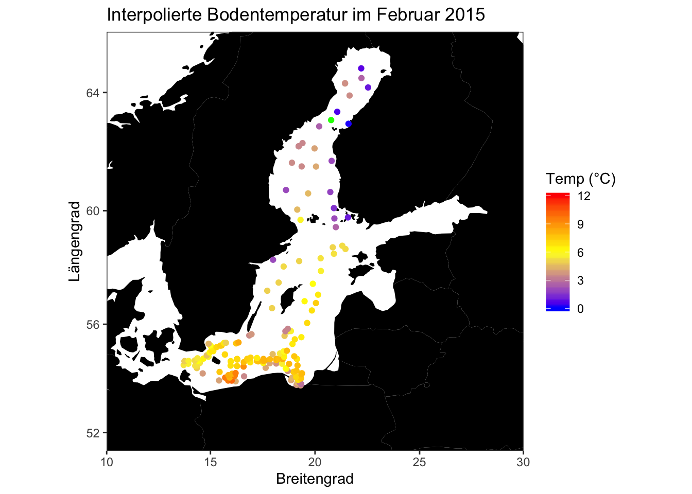

Kartenerstellung mit interpolierten Werte
Eine einfache Lösung in ggplot, sp und gstat
Bodentemperatur im Februar
Wie kommt man von hier ….
… nach hier?
## [inverse distance weighted interpolation]
Datenvorbereitung
Bevor die Karten erstellt werden können, müssen wir die Daten (der hydro Datensatz) erstmal entsprechend tidy machen und transformieren:
library(tidyverse)
library(lubridate)
# Import
hydro <- read_csv("data_site/1111473b.csv")
names(hydro) <- c("cruise", "station", "type", "date_time",
"lat", "long", "depth", "pres", "temp", "psal", "doxy")
hydro$month <- month(hydro$date_time)
hydro$day <- day(hydro$date_time)
hydro$depth <- as.integer(hydro$depth)
temp_bot <- hydro %>%
# erst filtern wir die Bodenwerte und Februar
filter(depth > 30,
pres >= (depth-10), month == 2) %>%
# zuerst müssen die Temperaturwerte der einzelnen Tiefenstufen
# pro Sampling gemittelt werden (daher die Gruppierung)
group_by(lat, long, date_time) %>%
summarise(temp = mean(temp, na.rm = TRUE)) %>%
# die Gruppe brauchen wir nicht mehr
ungroup() %>%
# wir nehmen nur die Dateien die wirs später brauchen
select(lat, long, temp)Schritt 1: Wir erstellen die Grundkarte
ggplot stellt eine Funktion zur Verfügung, mit der Kartendaten aus dem package maps in dataframes umgewandelt werden, die dann plottbar sind mit ggplot2:
world <- map_data("world")
head(world)## long lat group order region subregion
## 1 -69.89912 12.45200 1 1 Aruba <NA>
## 2 -69.89571 12.42300 1 2 Aruba <NA>
## 3 -69.94219 12.43853 1 3 Aruba <NA>
## 4 -70.00415 12.50049 1 4 Aruba <NA>
## 5 -70.06612 12.54697 1 5 Aruba <NA>
## 6 -70.05088 12.59707 1 6 Aruba <NA>Um die Daten nun zu plotten braucht man das geom geom_path
worldmap <- ggplot(world, aes(x = long, y = lat)) +
geom_path(aes(group = group))
worldmapWenn Land und Wasser deutlicher von einander abgrenzen werden sollen, kann man statt geom_path auch Polygone verwenden, die farblich anders gefüllt sind:
worldmap <- ggplot(world, aes(x = long, y = lat)) +
geom_polygon(aes(group = group), fill = "black")
worldmapNun können wir uns in die Ostsee reinzoomen mit der Koordinatensystem-Funktion coord_map
baltic <- worldmap + coord_map("ortho", xlim = c(10, 30), ylim = c(52,66))
balticSchritt 2: Datenpunkte hinzufügen
Da das Objekt baltic ein ggplot Objekt ist, lässt sich dieses um weitere Elemente - wie unsere Datenpunkte der Bodentemperatur einfach dazufügen. Allerdings müssen wir darauf achten, dass wir auf einen anderen Datensatz verweisen!
p1 <- baltic +
geom_point(data = temp_bot, aes(x = long, y = lat, color = temp))
p1Da die Farbskale nicht besonders günstig ist, werden wir diese mit einer der scale_ Funtionen verändern:
p1 <- p1 +
scale_color_gradient2(midpoint = 6,
low = "blue", mid = "yellow", high = "red",
na.value = "green", limits = c(0, 12))
p1Schritt 3: Karte aufhübschen
Beschriftungen kann man mit labs() verändern:
p1 <- p1 + labs(fill = "Temp (°C)", y = "Längengrad", x = "Breitengrad",
title = "Interpolierte Bodentemperatur im Februar 2015")Wenn wir die graue Hintergrundfläche farblich ändern wollen, könnten wir das mit dem panel.background Argument in theme() machen (siehe weiter unten), oder wir verwenden wir einfach mal ein anderes Layout mit einem der vordefinierten `theme_() Funktionen:
p1 <- p1 + theme_bw() # (bw steht für black-and-white)Das grid lässt sich mich mit der allgemeinen theme() Funktion verändern:
p1 <- p1 + theme(panel.grid = element_blank())
p1
theme() bietet eine sehr große Auswahl an Argumenten bzw. Elementeinstellungen, von denen panel.grid (also das Gitter im panel selbst) nur eines ist. Hier lohnt sich ein Blick in die Hilfe mit ?theme auf jedenfall. Mit der element_blank() geben wir an, dass das grid Element leer bleiben soll.
Ich habe bewusst diesen Schritt nach dem Layout-Schritt mit theme_bw() gemacht, weil diese Funktion alle manuellen theme Veränderungen überschreibt und dann wäre unser grid wieder sichtbar.
Schritt 4: Die Interpolation der Temperatur
Für die nächsten Schritte reicht uns ggplot2 allerdings nicht aus und wür müssen auf 2 weitere wichtige Pakete zurückgreifen
- gstat: dies ist ein Paket für räumliche und räumlich-zeitliche geostatische Modellierung und Simulation und enthält diverse kriging und Variogram Funktionen.
- sp: sp ist ein Paket welches Klassen und Methoden für räumliche Daten definiert und stellt Funktionen zum Plotten von Karten, räumliche Auswahlmethoden, etc. Es gibt mittlereweile eine aktualiserte Fassung, die einige Veränderungen aufweist und noch besser mit ggplot funktioneren soll: sf. Noch sind aber nicht alle Pakete für räumliche Analysen auf sf angepasst.
Die Interpolation der Temperatur
Zuerst erstellen wir ein gleichmäßiges Grid was für für die Vorhersage der Temperatur brauchen und dann wandeln wir dieses grid und unsere Originaldaten in sog. SpatialPointsDataFrame Objekte, welche für die Interpolationsfunktion ebraucht wird. Anstelle des Ladens beider Pakete werden ich beim Aufruf der Funktion, das entsprechende Paket mitangeben, um Euch zu zeigen welche Funktion aus welchem Paket ist.
# Um den Code allgemeiner zu halten werden die Daten unter anderem Namen gespeichert:
dat <- temp_bot
# Für die weiteren Schritten müssen die Koordinaten als 'x' und 'y' bezeichnet werden
dat$x <- dat$long
dat$y <- dat$lat
# Den räumliche Ausdehnung der Stationen ermitteln (mit etwas Rand)
x_min <- min(dat$x) - min(dat$x) / 100
x_max <- max(dat$x) + max(dat$x) / 100
y_min <- min(dat$y) - min(dat$y) / 100
y_max <- max(dat$y) + max(dat$y) / 100
# Ein gleichmäßiges grid erstellen, basierend auf meinem definierten Samplinggebiet
grd <- expand.grid(
x = seq(from = x_min, to = x_max, by = .1),
y = seq(from = y_min, to = y_max, by = .1))
# The following converts dat into a SpatialPointsDataFrame object (sp package)
# Die folgende Funktion aus sp wandelt den grid in das sog. SpatialPointsDataFrame
# Objekt (wird bereits automatisch abgespeichert!!)
sp::coordinates(grd) <- ~x + y
sp::gridded(grd) <- TRUE
# Das gleiche nun mit den Originaldaten
sp::coordinates(dat) = ~x + yNun kommt die Interpolation mit der ìdw() Funktion aus dem gstat Paket. Diese Funktion erstellt das Modell und berechnet die vohergesagten Werte gleich mit.
idw_mod <- gstat::idw(formula = temp ~ 1, locations = dat,
newdata = grd) # apply idw model for the data## [inverse distance weighted interpolation]class(idw_mod)## [1] "SpatialPixelsDataFrame"
## attr(,"package")
## [1] "sp"Wir Ihr sehen könnt, ist das entstandene Objekt kein SpatialPointsDataFrame mehr sondern ein SpatialPixelsDataFrame. Dieses muss zurück in einen data frame umgewandelt werden, damit wir es mit ggplot plotten können:
idw_mod <- as.data.frame(idw_mod) Einbau der Interpolation in die Karte
Die Reihenfolge des Codes aus Schritt 1-3 muss leicht umgeändert werden, wenn die Interpolierten mit geplottet werden sollen:
- Zuerst wird ein leerer Plot erstellt, da wir in den geom_ Funktionen auf unterschiedliche Dateätze greifen will.
- Zu diesem Plot kommt dann ein
geom_tilelayer für die interpolierten Werte. - Aschl. ändern wir die Farbskala der tiles bzw. Kacheln. Wichtig ist dass wir das fill aesthetic jetzt ansprechen wollen und nicht mehr color - daher nehmen wir auch
scale_fill_gradient2anstelle vonscale_color_gradient2. - Anschl. fügen wir die Weltkarte ein (als
geom_polygon) und ändern das Koordinatensystem wie vorhin. - Die Punkte könnte man wenn als hohle Kreise mit einzeichnen
- Zum Abschluss wird das Layout geändert:
p2 <- ggplot() + geom_tile(data = idw_mod, aes(x,y,
fill = round(var1.pred, 0))) +
scale_fill_gradient2(midpoint = 6,
low = "blue", mid = "yellow", high = "red",
na.value = "black", limits = c(0, 12)) +
geom_point(data = temp_bot, aes(x = long, y = lat), shape = 21,
colour = "grey80", alpha = 0.4) +
geom_polygon(data = world, aes(x = long, y = lat, group = group),
fill = "black", colour = "black") +
coord_map("ortho", xlim = c(12, 28), ylim = c(54,66)) +
labs(fill = "Temp (°C)", y = "Längengrad", x = "Breitengrad",
title = "Interpolierte Bodentemperatur im Februar 2015") +
theme_bw() +
theme(panel.grid = element_blank())
p2Et voila, fertig ist die Karte!